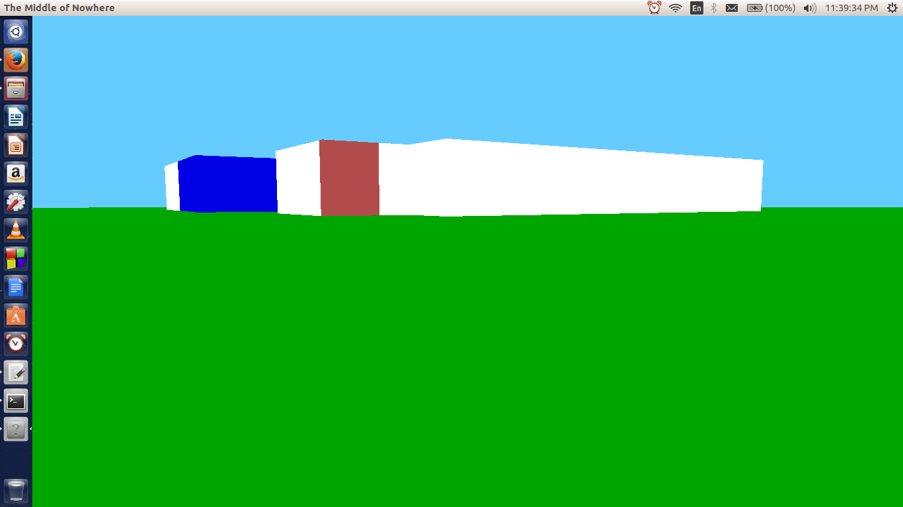
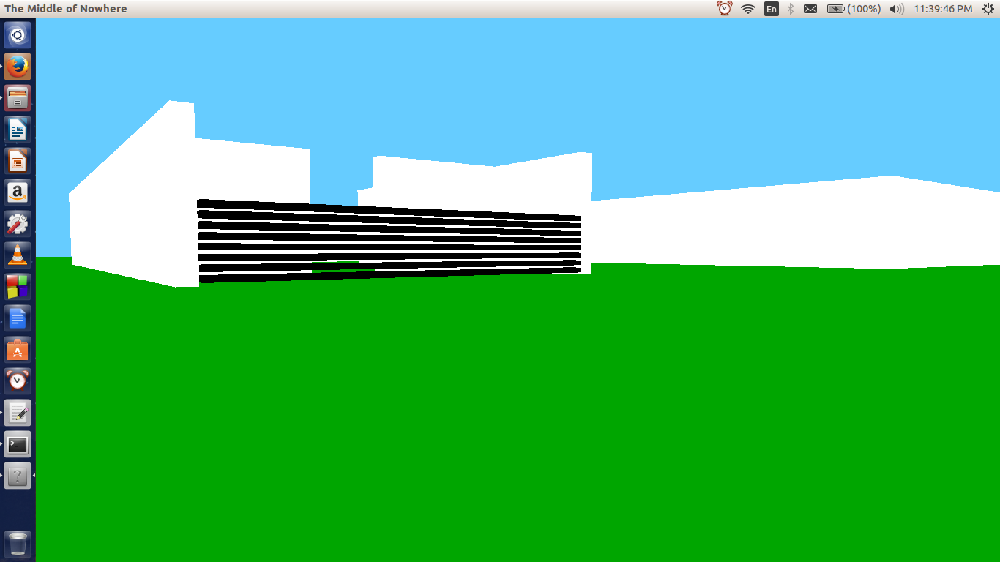
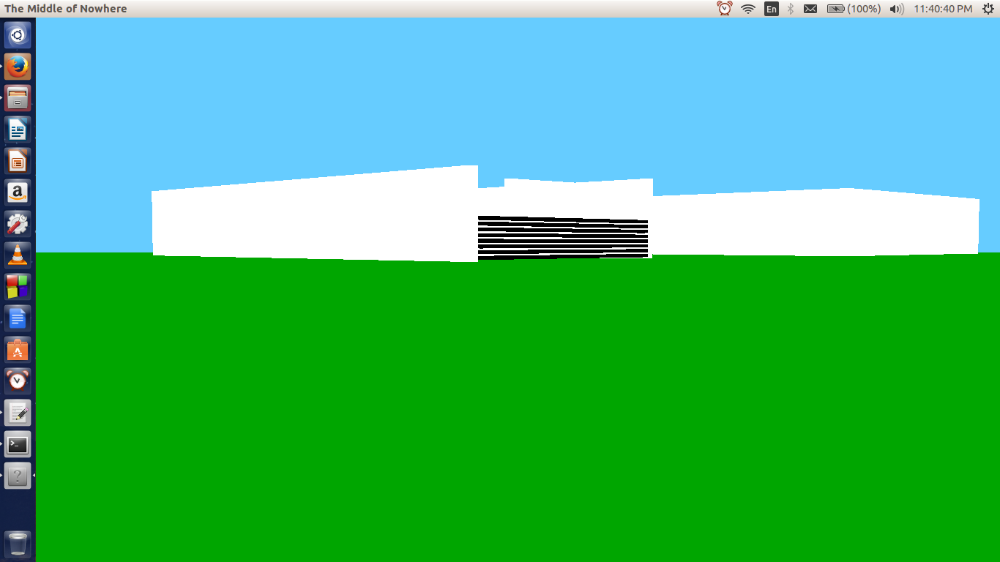
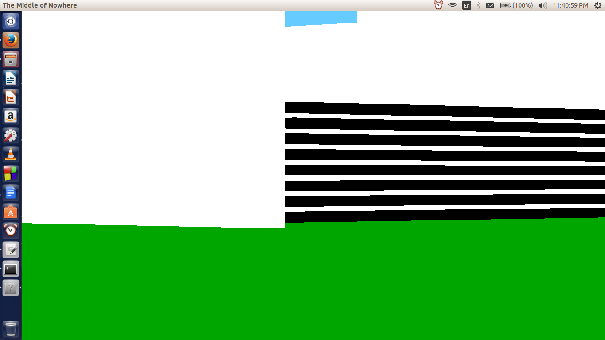
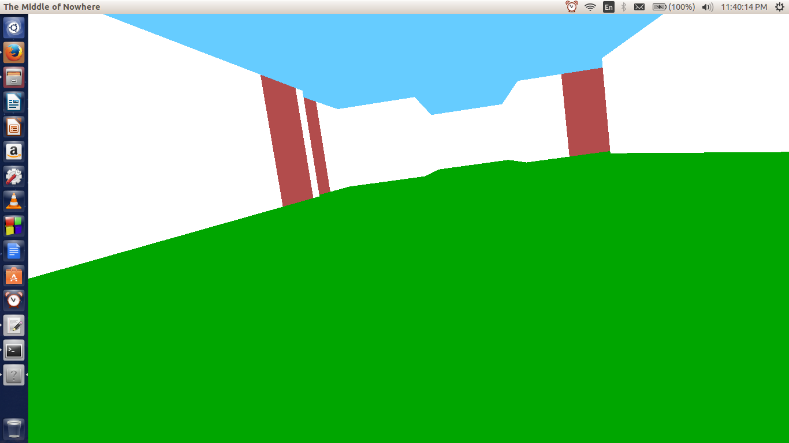
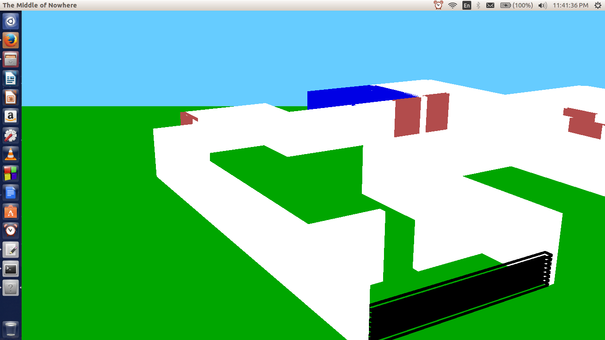

Scene Drawing and Camera Manipulation
Objective:
Our assignment involved the drawing of an aesthetically beautiful scene with camera functionality for zooming, panning and rolling the camera.
We were not allowed to use textures, so we could rely only on solid colouring, lighting and material properties to lend an aesthetic quality to the scene.
Why does our assignment stand out?
Firstly, interactive objects. Various objects can be toggled on and off in the scene, and this toggling is smart. Interaction with a particular object takes place only when within reasonable distance of it.
Secondly, we additionally implement movement ability for the camera - so you can move forwards, backwards, strafe left and right; much like you would in a First Person shooter. Oh, you can move upwards and downwards too, if that was necessary.
Details of implementation
- Camera Movement : Global variables tracking the camera position and direction vector are maintained. Simple vector math is used to update the position based on the current direction. Forward, backward and sideways movement is restricted to a 2D plane. Height of this plane can be varied.
- Camera Manipulation : We allow the camera to pan 360° (both yaw and pitch), roll from -45° to 45° (although it doesn't make a lot of sense here) and zoom in and out varying the field of view angle from 1° to 45°. All this is done by varying global angles representing rotation around the axes. Zooming is implemented by changing the field of view angle in the perspective setup function
- House drawing and furnishing : We first wrote elementary functions to draw a wall, door, bed, table etc. with a given colour and size. We now use this in a push matrix-transform-draw-pop matrix pipeline to avoid cumbersome coordinate computations. The push-pop matrix style allows us to specify coordinates in convenient frame of references.
Have a look at the finished scene here.
Features of Interest
These showcase the camera functionality on a mock scene.


Here's showing off the zoom functionality.


Here's showing off the roll functionality. And a panned establishment shot

